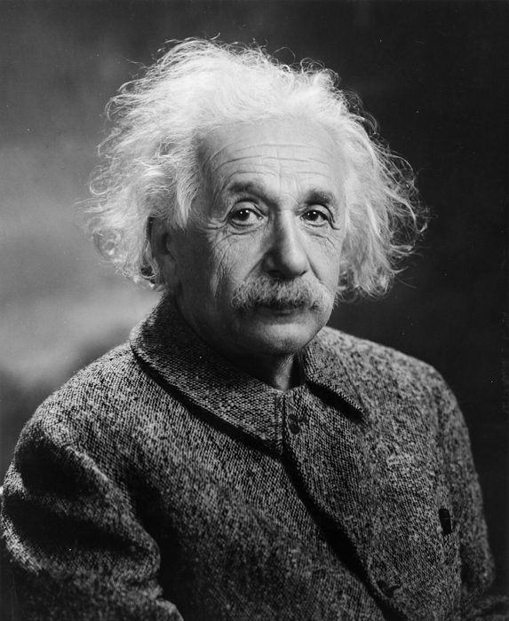
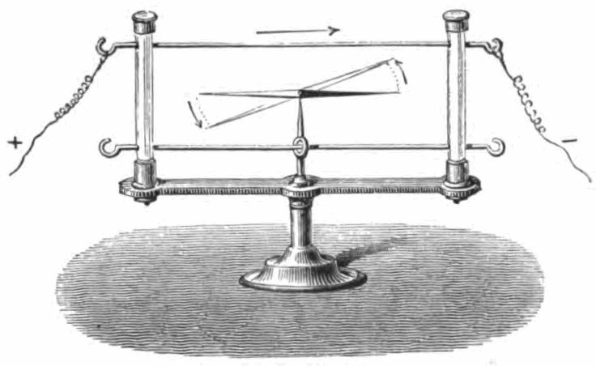
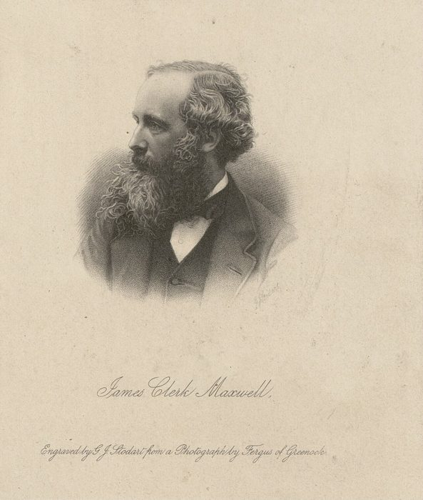
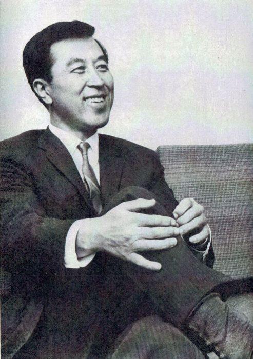
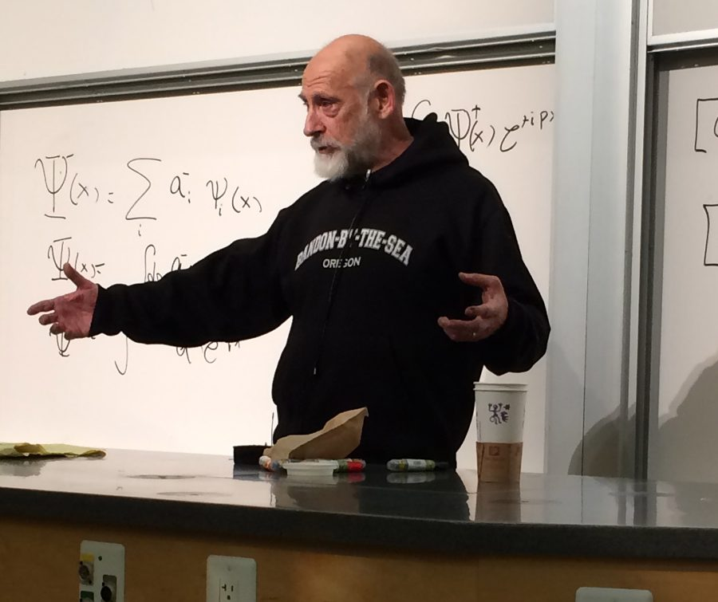

这一章在做什么
全书最长的一章，也是物理名词最密的一章。作者还在找课题，盯上了走廊里最冷门的人：做弦理论的施瓦茨。
前 19 段是一堂物理课，讲四种力和「统一」；后面是两场对话，一场被朋友挖苦，一场吃闭门羹。
物理课读不动就先看本页第三节，再回去读；对话部分要抓的是语气，几乎句句带刺。
第 1–19 段
一堂物理课
四种力、统一、弦理论
最长，术语最多
第 20–34 段
找 Constantine 聊
全是对话，口语多
他句句在挖苦
第 35–47 段
敲施瓦茨的门
几句话就被打发了
最后一段埋了伏笔
本站示意图。这一章分三块，难度前重后轻。段号对应原书的自然段。
背景：作者默认你知道的事
这一章的三个人
约翰·施瓦茨 John Schwarz 真名真人，1941 年生，美国理论物理学家。1981 年在加州理工几乎独自守着弦理论。
Constantine 书中人物，名字改过 第 7 章出过场，雅典来的博士后。长得帅，嘴巴毒。
Meg 书中人物，名字改过 Constantine 的女友，一笔带过。
1984 年，施瓦茨和英国人迈克尔·格林（Michael Green）的一项结果让弦理论成了热门。最后一段的伏笔指的就是它。
美国大学的职位阶梯：tenure 是什么
博士后
research fellow
几年一签，到期走人
助理教授
assistant professor
有几年考察期
通过了才能留下
终身教授
tenured professor
拿到 tenure
学校不能随便解聘
作者、Constantine、施瓦茨
费曼、盖尔曼
本站示意图（简化）。下面一行是书里各人所在的台阶，施瓦茨的位置按 Constantine 在第 28 段的说法。
tenure 是终身教职，拿到之后可以放心做十年不出成果的难题（第 8 章费曼说过这一点）。Constantine 挖苦施瓦茨的点就在这里：来了九年，还和刚毕业的博士后一个级别。
预印本（preprint）
论文投给期刊后，审稿加排版常常要等好几个月。物理学家等不及，就把稿子先复印了寄给同行，这叫 preprint。1981 年靠邮寄；1991 年有了预印本网站 arXiv，书里那句「如今可以从网上下载」说的就是它。
reprint 是期刊已经登出来的文章的单行本。施瓦茨塞给作者的那一摞，两种都有。
爱因斯坦的后半生

爱因斯坦，1947 年摄于普林斯顿。这时他已经找了二十多年统一场论。
Oren Jack Turner，公有领域，维基共享资源 爱因斯坦 1915 年完成广义相对论。从 1920 年代到 1955 年去世，他大部分精力都花在找一个把引力和电磁力合起来的理论上，没有成功。同行那时多在做量子力学，觉得他离了群。第 8、10 段拿他来垫施瓦茨：都是守着一个冷门的大目标。
前几章留下的三个说法
希腊人、巴比伦人 是第 4 章里费曼的分类，和国籍无关：「希腊人」看重数学上的秩序和美（盖尔曼），「巴比伦人」看重现象和直觉（费曼自己）。
inside track 是第 8 章费曼的话：做难题时要相信自己有别人没有的独门优势。
无穷维 是作者博士论文用的数学方法，序言里提过。
这一章的物理，先用中文过一遍
第 3 到 19 段只讲了一件事：物理学家想把所有的力写进同一个理论，施瓦茨的弦理论自称能做到，但当时没人信。分四步看。
第一步：四种力，三套理论
自然界已知的力只有四种。物理学家普遍相信，从婴儿出生到星系形成，一切现象归根结底都是这四种力造成的，这个信念叫还原论（reductionism）。
用程序员的话说：整个宇宙只调用四个底层模块，而这四个模块现在由三套互不兼容的代码各管各的。
强力
电磁力
弱力
引力
strong force
electromagnetism
weak force
gravity
把夸克粘成质子
把原子核粘住
原子、分子、光
一切电器
让原子核发生
β 衰变
行星、恒星、潮汐
把你留在地面
描述它的理论
描述它的理论
描述它的理论
描述它的理论
量子色动力学
电弱理论（两种力合写）
广义相对论
强约 100 倍
强约 1000 倍
强约 10²⁷ 倍
从左到右越来越弱（倍数是书里第 4 段给的）
本站示意图。书里的「billions of billions of billions」是三个十亿连乘，即 10²⁷。这些倍数只是量级上的粗略比较。
四种力脾气差得很远，这是第 4 段的内容：电磁力能吸也能斥，引力只吸不斥；引力和电磁力离得越近越强，强力反过来，夸克靠得越近它越弱。
引力最弱，却管着宇宙尺度的事，因为它只吸不斥，物质越多就累加得越大。
三套理论里，前两套（量子色动力学、电弱理论）都是量子理论，只有管引力的广义相对论不是。这是后面一切麻烦的根子。
第二步：「统一」是什么意思，以及它以前成功过一次
统一（unification）不是把几个理论钉在一起，而是找到一个更底层的理论，原来那几种力都是它的特例，并且能说清它们之间的关系。像重构：把几个各写各的模块收进一个框架。
第 5 段讲了历史上第一次统一。电和磁原本被当成两回事，所以古时候算起来是「三种力」：电、磁、引力。1820 年有人发现通电的导线能让旁边的指南针偏转，电和磁有关系，但没人说得清。
1865 年麦克斯韦用一组方程把两者写成了一个东西：电磁力。

演示「通电导线让磁针偏转」的教学仪器，1876 年的教科书插图。这个实验最早由丹麦人奥斯特在 1820 年做出。
Agustin Privat-Deschanel，公有领域，维基共享资源 
詹姆斯·克拉克·麦克斯韦（1831–1879），苏格兰人。书里顺口提了一句他身高「勉强五英尺四」，约 1.63 米。
G.J. Stodart，公有领域，维基共享资源
第 6 段说统一不只是好看。麦克斯韦方程推出：加速运动的电荷会发出电磁波，波速算出来正好是光速，所以光就是电磁波。既然光是，就该还有别的电磁波。
1880 年代末德国人赫兹在实验室里造出了无线电波，后来才有收音机、电视、雷达、微波炉。爱因斯坦的狭义相对论也是从「光速不变」这里起步的。
读第 5 段时注意语气。作者故意用讲童话的腔调：Long, long ago 、in a faraway land 、a wise philosopher 、these mortals （这些凡人）。
这和前面那个 prequel （前传）是一套玩笑，把电磁学史讲成一部大片的前传。不是文体变难了，是他在逗你。
电
磁
弱力
强力
引力
电磁力
麦克斯韦，1865
电弱力
1981 年时已完成
大统一
有方案，没证实
万物理论
弦理论说它能做到
1981 年已经做到
还只是目标
本站示意图。书里说「其实有五种力」，就是把最左上角的电和磁分开数。引力是最后也是最难并进来的一个。
到故事发生的 1981 年，第二次合并也做完了：电磁力和弱力并成电弱理论（三位提出者 1979 年得了诺贝尔奖）。把强力也并进来的方案有人提了，叫大统一理论，至今没被实验证实。
最大的障碍是引力：别说并进来，连一个单独的「量子引力理论」都还没有。
第 8 段把「统一场论」的要求又抬高一层：多数人想要的不只是一个框架，而是证明所有的力都出自同一个更基本的力。作者老实交代，实验上没有多少证据说自然界真是这样，也没有证据说不是。大家追它，是出于审美和信念。
第 9 段给了另一个理由：四种力的强弱只要变一点，恒星、原子核、生命就都不会有。为什么恰好是现在这个比例？分开的理论回答不了，只有同时包含四种力的理论才可能回答。
第三步：弦理论的主意
原来的图像里，每种基本粒子是一种不同的「点」，实验家还在不断找到新的，种类越来越多。弦理论只假设一种东西：一根极小的、会振动的弦。它怎么振，决定它看上去是哪种粒子。
用代码打比方：不再为每种粒子写一个类，只有一个类，粒子的种类只是实例的状态。
原来的图像：粒子是点
弦理论：只有一种弦
电子
夸克
中微子
每种是一种不同的点
新的还在不断找到
一种粒子
另一种粒子
又一种粒子
同一根弦，振动方式不同
好比一根琴弦拉出不同的音
本站示意图（大幅简化）。弦小到远远超出任何仪器的分辨能力，所以看上去还是一个点。
第 12 段的比喻：琴弦的振动方式决定音高，弦理论里弦的振动方式决定它是哪种粒子。
Dejan Krsmanovic，CC BY 2.0，维基共享资源

南部阳一郎，1965 年。日本出生，长期在芝加哥大学，2008 年获诺贝尔物理学奖。
朝日新聞社，公有领域，维基共享资源 
伦纳德·萨斯坎德 2013 年在斯坦福大学讲量子力学。
Acmedogs，CC BY-SA 3.0，维基共享资源
第 11 段说弦的想法是南部和萨斯坎德 1970 年提出的。物理史上通常还会加上丹麦人尼尔森（Holger Nielsen），三人各自独立想到。
弦理论让施瓦茨着迷的地方（第 13 段）：从它的数学形式看，它天然就包含引力，而且是量子的。别人拼了几十年拼不进去的那一块，它自带。
第四步：为什么 1981 年几乎没人信
一、没法检验。 弦太小，直接看不见。那就得找一个实验，弦理论和别的理论对结果的预言不一样。但这个理论的数学太难，没人算得出这样的预言。
第 14 段那个「我在家是读简·奥斯汀还是灌马提尼」的比方说的就是这个：看不到内部，就找一个两种猜想表现会不同的场合。
二、退而求其次也没做到。 算不出新预言，那能不能解释已知的东西？现在的理论里，电子电荷、夸克质量这些数只能靠测量填进去，像代码里写死的常量。
弦理论有希望把它们从头算出来。这种「事后解释已知事实」被叫作 postdiction（对着 prediction 造的词）。可这也没人算得出来。
三、数学上出了矛盾。 1970 年代有人发现理论内部有不自洽的地方（inconsistencies）。多数人就此放弃，只剩施瓦茨和极少几个合作者接着找出路。
四、需要多出六个空间维度。 弦理论只有在九个空间维度里才不自相矛盾，可我们只看得见三个。理论家的办法是让多出来的六个维度卷得极小，小到察觉不到。
站远了看：一条线
凑近了看：一根管子
只看得出「前后」一个方向
前后
多出一个方向：绕着管子转圈
圈太小，站远了根本看不出
本站示意图。「卷起来的小维度」的常见比方：水管远看是一维的，凑近才发现还有一个绕圈的方向。书里第 18 段用的是另一个比方：住在平面上的人，「上下」方向小到跳起来都察觉不到。
第 17 段有一句自嘲：这比不上「我那个无穷维的方法」离谱。区别在于，作者论文里的无穷维只是近似计算用的数学手段，没人当真；弦理论的额外维度必须真的存在。
英文 中文 一句话 electromagnetism 电磁力，电磁学 电和磁合起来的那种力。电磁力也写作 electromagnetic force。 gravity / gravitational force 引力 有质量的东西互相吸引。四种力里最弱。 strong force 强力 把夸克粘成质子、中子，把原子核粘住。核能来自它。 weak force 弱力 只在原子核内的尺度起作用，负责 β 衰变。 subnuclear 亚核的 比原子核还小的尺度上的。 interaction 相互作用 物理学家说「力」时更正式的叫法。 quantum electrodynamics 量子电动力学 电磁力的量子理论，简称 QED。费曼因它得诺贝尔奖。 quantum electroweak theory 电弱理论 把电磁力和弱力合写的量子理论，是 QED 的推广。 quantum chromodynamics 量子色动力学 强力的量子理论，简称 QCD。费曼当时正在啃它。 general relativity 广义相对论 爱因斯坦的引力理论（1915）。不是量子理论。 special relativity 狭义相对论 爱因斯坦 1905 年的理论，从光速不变出发，时间和空间缠在一起。 reductionism 还原论 相信一切现象都能由基本物理定律解释。 unification 统一 把几种力写进同一个理论。 unified field theory 统一场论 一个解释所有力、并说清它们之间关系的理论。 a theory of everything 万物理论 统一场论的通俗叫法，1980 年代流行起来。 static electricity 静电 摩擦起电那种。古希腊人就注意到了。 electric charge / current 电荷 / 电流 电流就是流动的电荷。 empirical law 经验定律 从实验总结出来、还说不出道理的规律。 electromagnetic field / wave 电磁场 / 电磁波 光、无线电波、X 射线、微波都是电磁波，只是波长不同。 accelerating charge 加速运动的电荷 电荷一加速就会向外发出电磁波。天线就是这个原理。 nucleus（复数 nuclei） 原子核 原子中心由质子和中子组成的小核。 radioactive decay / beta decay 放射性衰变 / β 衰变 原子核自己变成另一种核。β 衰变是其中一类：一个中子变成质子，放出电子。 electron / proton 电子 / 质子 一个带负电，一个带正电，电量相等。 quark 夸克 组成质子、中子的更小粒子。盖尔曼最初提出三种，后来增加到六种。 elementary / fundamental particle 基本粒子 不能再拆的粒子。 point particle 点粒子 把粒子看成没有大小的点。弦理论要换掉的就是这个假设。 string theory 弦理论 粒子是极小的振动的弦。 mode / state of vibration 振动模式 / 振动状态 弦怎么个振法。不同振法对应不同粒子。 quantum theory of gravity 量子引力理论 把引力也按量子规则来写的理论。至今没有公认的版本。 postdiction 「后言」，事后解释 不预言新现象，而是解释已知但没人懂的事实。仿 prediction 造的词。 fundamental physical quantities 基本物理量 电子电荷、夸克质量这类只能测、还算不出的数。 inconsistency / mathematically consistent 不自洽 / 数学上自洽 理论内部推出互相矛盾的结果，就是不自洽。 spatial dimension 空间维度 长、宽、高是三个。弦理论还要再加六个。 quantum principle 量子原理 普朗克 1900 年提出：能量是一份一份的。
词与短语
词条按在书里出现的顺序排。斜体小字是它所在的那句话里的几个词，方便你在纸质书上找到。
inside track
… said about an inside track …
别人没有的有利位置，独门优势
本义是跑道的内圈，跑内圈路程短。第 8 章费曼用过这个词。
mathematically inclined
… always more mathematically inclined than most …
偏数学的，有数学头脑的
inclined 不是「倾斜」，是「有某方面的天性」。musically inclined = 有音乐细胞。
drawn to
… drawn by my nature to anything …
被……吸引
draw 这里是「拉、吸引」，不是画画。句子骨架是 drawn … to anything that … ，中间插了 by my nature （天性使然）。
go against the grain
… went against the grain of accepted …
逆着……来，反其道而行
grain 是木头的纹理，逆着纹理刨木头很费劲。accepted wisdom = 公认的看法。
faculty on the floor
… other faculty on the floor were …
这层楼的教研人员
floor 是楼层，不是地板。faculty 见序言。
of the day
… important problems of the day …
当时的，那个年代的
不是「今天的」。
exotic
… research involved quite exotic mathematics …
冷僻的，稀奇古怪的
不是「异国风情」。和上一段的 ordinary mathematics 相对。
generalization
… a generalization of quantum electrodynamics …
推广，更一般的版本
数理语境里不是「概括、以偏概全」。原理论是它的特例。
cut across party lines
… and cuts across “party lines,” from …
不分派别，各派都这么想
party line 是政党的立场。这里的两「党」是希腊派和巴比伦派。
the Greeks / the Babylonians
… to the Babylonians like Feynman …
「希腊派」和「巴比伦派」物理学家
第 4 章的分类，指两种做物理的风格，不是国籍。
about the most …
… is about the most important pursuit …
差不多是最……的
about 在最高级前 = 几乎可以说。pursuit 是「毕生追求的事」。
subsume
… if true, would subsume (and alter) …
把……收进来，纳入自己名下
大的吞掉小的，小的成为它的一部分。
in one fell swoop
… them in one fell swoop, replacing …
一下子，一举
固定习语，出自莎士比亚。fell 是古词「凶猛的」，和 fall 无关；swoop 是猛禽俯冲。
farfetched
… to be a farfetched goal …
不着边际的，牵强的
字面是「从老远拿来的」。
billions of billions of billions
… billions of billions of billions times …
十亿的十亿的十亿倍，即 10²⁷ 倍
ebb and flow
… for the ebb and flow of …
潮落潮涨
也常用来比喻起起落落。
on the cosmic scale
… are on the cosmic scale …
在宇宙尺度上
scale 是「尺度」，不是秤。后面的 on the atomic scale 同理。
coalesce
… these stars themselves to coalesce …
聚拢，凝成一团
读 /ˌkoʊəˈles/。第 9 段还会出现。
lend A to B
… force that lends to materials most …
赋予 B 以 A
lend 不是「借钱」。语序倒了：lends [to materials] [most of the properties]。
harness
… is the harnessing of this force …
驾驭，利用（自然力）
本义是给马套上挽具。
account for
… that accounts for most of the …
是……的原因；带来了……
和账户无关。第 12 段的 account for the wide variety 是「解释」。
prequel
… a kind of “prequel” to the …
前传
仿 sequel（续集）造的词，电影用语。
the story goes …
… The story goes something like this …
故事大致是这样的
go 表示「说法是、内容是」。as the saying goes = 俗话说。
in a faraway land
… in a faraway land (ancient Greece) …
在一个遥远的国度
和前面的 Long, long ago 合起来是童话的开场白。作者在开玩笑。
anything other than
… these were anything other than two …
不是……的任何别的东西
整句：没有迹象表明它们不是两类各不相干的现象。双重否定，意思是「人人都当它们是两回事」。
not quite
… but no one quite knew how …
不完全，说不太清
quite 和否定连用 = 「不完全」。没人说得清到底怎么个有关系法。
mortals
… all these mortals could conjure up …
凡人
mortal = 会死的。神话里神对人的叫法，接着上面的童话腔，指那些科学家。conjure up = 像变戏法一样弄出来。
hodgepodge
… a hodgepodge of empirical laws …
大杂烩
东一条西一条，不成体系。
five foot four
… physicist, barely five foot four, named …
五英尺四英寸，约 1.63 米
说身高时省掉 inches，foot 也常不变复数。barely = 勉强够。
implications
… A study of its implications revealed …
（从理论能推出的）结论、后果
这里不是「暗示」。
pave the way for
… This paved the way for German …
为……铺平道路
后面的 experimentalist 是做实验的物理学家，和 theorist（做理论的）相对。
there can be little doubt
… there can be little doubt that …
几乎毫无疑问
little 不带 a = 几乎没有。这是费曼《物理学讲义》里的话。
out of
… anyway, out of an aesthetic sense …
出于（某种动机）
aesthetic sense = 审美感。后面还有一个 out of faith ：出于信念。
out of balance
… even one percent out of balance …
失去平衡，数目对不上
这个例子出自《费曼物理学讲义》。后面的 a yard 是一码，约 0.9 米。
in fine balance
… disparate, but in fine balance …
处在精细的平衡之中
fine 是「精细」，不是「好」。disparate = 彼此迥异。
tantalizing
… a unified theory was tantalizing …
吊人胃口的，看得见够不着的
来自希腊神话的坦塔罗斯：水和果子就在嘴边，永远够不到。
Unless you believed …
… Unless you believed John Schwarz …
除非你信施瓦茨的
不完整的句子，接的是上一句：谁都没有量子引力理论。除非你信他。
tie a string around your finger
… might tie around your finger to …
在手指上系根线（提醒自己别忘事）
美国人的老习惯，相当于「在手上写个字」。作者借它说：此弦非彼弦。
hold the promise of
… that it held the promise of …
有希望成为
promise 是「前景、苗头」，不是谁许了诺。第 16 段的 the promise of string theory 同义。
make out
… enough precision to make out such …
看清，辨认出
多用于勉强才看得出的东西。
mole
… that violin-shaped mole on your nose …
痣
另一个意思是鼹鼠。这里是说：凑近看是小提琴形状的一大块，远看像个小点。
beauty spot
… like the tiny beauty spot your …
美人痣
妈妈总是往好了说。
plum job
… landed this plum job at …
美差，人人想要的好工作
plum 本义李子，作形容词 = 上好的。land 见序言。
tend to my garden
… novels, tend quietly to my garden …
侍弄花园
tend to + 名词 = 照料。不是 tend to do （往往会）。
guzzle
… do I guzzle martinis and try …
大口猛灌
martini 是马提尼，一种烈性鸡尾酒。
blow his brains out
… garbage man from blowing his brains out …
开枪打自己的头
keep A from doing = 拦着 A 不让他做。garbage man 是收垃圾的工人。这是作者编的夸张画面，和奥斯汀、园艺、小提琴形成反差。
the Leonards
… behavior of the Leonards of the …
（两种猜想里的）那两个伦纳德
人名加复数：同一个人的两个版本。Leonard 是作者自己。diverge = 出现分歧。
so it is with
… And so it is with strings …
……也是这个道理
比方打完，收回正题的固定说法。
from scratch
… produce these numbers from scratch …
从零开始，凭空（算出来）
scratch 是地上划的起跑线。程序员熟悉的 build from scratch 。
realize
… string theory had been realized …
实现，兑现
这里不是「意识到」。前景几乎一点没兑现。
figure
… including John Schwarz, figured it would …
估计，认为
美式口语里 figure = think。figure out 才是「弄明白」。
drop
… Everyone else simply dropped the theory …
放弃，撒手不干
dispel
… did not try to dispel was …
消除，驱散
句子骨架：One of the problems … (that) Schwarz did not try to dispel was …。
artifact
… were not an artifact of a …
（方法本身带来的）人为假象
不是「文物」。科研里常用：不是真实现象，是工具造成的副产品。
virtually
… be virtually impossible to detect …
几乎
不是「虚拟地」。
say
… a two-dimensional world, say confined to …
比方说
插入语。第 14 段的 say from the limited interactions 也是。confined to = 被限制在。
get off the ground
… even notice getting off the ground …
离开地面
这里是字面意思。它更常见的是比喻义：（计划）起步。前一句 So meager is your jump that 是倒装，meager = 微不足道。
Area 51
… studying aliens at Area 51 …
51 区
美国空军在内华达州沙漠里的保密基地。民间传说那里藏着外星人，是阴谋论的代名词。作者的意思：同事们觉得施瓦茨一样不靠谱。
inside office
… He had an inside office—no window …
不靠外墙的办公室
在楼的里圈，所以没有窗。
got to bed at four
… Got to bed at four …
（我）凌晨四点才睡
口语省了主语 I。get to bed = 上床睡觉。
life is tough
… Hey—life is tough,” he said …
日子不好过啊
反话。他是和女友玩到四点，在炫耀。下一句作者点明了他的意思正相反。
in a … sort of way
… in a Mediterranean sort of …
是……那一类的（帅法）
地中海式的帅：深色头发、深肤色那种。
of slight build
… slight build, but perfectly sculpted …
身材瘦小
build 作名词是体格；slight 是「纤细」。sculpted = 线条像雕出来的。
an air of sophistication
… lend him an air of sophistication …
一种见过世面的气质
air = 气质、派头。lend 又是「赋予」。
run into
… secret fantasy of running into him …
偶然碰见
不是撞上去。in twenty years = 二十年后。
intangible maturation
… for an intangible maturation that greatly …
一种说不清的成熟
intangible = 摸不着的。整句是自嘲：幻想里他老了，我只是更有魅力。
take on students
… He seems to take on students …
收学生，带学生
take on = 接下（任务、人）。
Come on.
… Come on. The guy’s been here …
得了吧。
不是「过来」。表示不信、不以为然。the guy = 那家伙。
tenure
… he still doesn’t have tenure …
终身教职
见上面背景。
busboy
… make to a busboy to indicate …
餐馆里收盘子的杂工
和公交车无关。美国餐馆里服务员（waiter）点菜上菜，busboy 只管撤盘子擦桌子。
some kind of pull
… Some kind of pull,” I said …
门路，后台
口语。have pull = 上面有人。
take a pull on
… took his own pull—on his cigarette …
吸一口（烟）
作者拿 pull 玩双关：我说施瓦茨有「后台」，他就「吸」了一口烟。
mule
… He’s a mule. He teaches …
骡子：干苦活累活的人
骡子是驮东西的牲口。意思是他只是系里的苦力。
get a free ride
… Feynman can get a free ride …
白搭车，不干活白占好处
他替大人物们把课教了、学生带了，他们才能清闲。
load
… with that big load maybe he’ll …
工作量
教课的量叫 teaching load 。
Thanks for your support
… Thanks for your support, Constantine …
多谢你的支持啊
反话。被泼了一头冷水之后说的。
around the corner
… Schwarz’s office was around the corner …
拐个弯就是
走廊拐角那边，很近。
fortyish
… He looked fortyish, and was very …
四十岁上下
数字或形容词加 -ish = 差不多。
clean-cut
… and was very clean-cut …
仪表整洁、规规矩矩的
头发短、胡子刮得干净的那种形象。
preprint
… his desk, reading a preprint, which …
预印本
见上面背景。第 43 段的 reprint 是已发表文章的单行本。
household word
… it were a household word …
家喻户晓的词
他说「弦理论」的口气，好像谁都该知道。其实当时没几个人听说过。
dole out
… He had doled out all the …
一点一点地发放
dole 是救济品。像发救济粮一样往外挤话。
spare
… he was willing to spare …
匀出来，舍得给
动词。Can you spare a minute? = 能抽一分钟吗？
hoard
… be hoarding his supply of eye contact …
囤着不用
连「目光接触」都像物资一样省着。eye contact = 看着对方的眼睛。
lick my wounds
… my office I licked my wounds …
独自疗伤，缓一缓
像动物受伤后躲起来舔伤口。受了挫之后自己待着。
a little too cheerily
… asked a little too cheerily if …
兴高采烈得有点过头
a little too + 副词：暗示他是在幸灾乐祸。stop by = 顺路过来一下。
disciple
… now Schwarz’s latest “disciple.” …
门徒，信徒
宗教色彩的词，带引号是 Constantine 在讽刺：好像弦理论是个教派。读 /dɪˈsaɪpl/。
a gesture with my middle finger
… gesture with my middle finger that …
竖中指
作者没直说。后半句是玩笑：希腊和意大利不用这个手势，但他看懂了。
revere … as heralding
… be revered worldwide as heralding one …
被尊为……的先声
revere = 敬重；herald = 预告……的到来。
值得停下来的句子
In the next few decades all these mortals could conjure up to describe the effects they had seen was a hodgepodge of empirical laws.
— 第 5 段。本站译：接下来几十年，这些凡人为了描述看到的现象，能拼凑出来的只有一堆零零碎碎的经验定律。
难在主语太长。骨架是 All [that] these mortals could conjure up … was a hodgepodge ：all 后面省了 that，一直到 seen 都是主语，谓语是 was 。
读到 could conjure up to describe 容易以为 could 是全句的谓语，结果后面多出一个 was。遇到 All … could do was … 这种句型，先找最后那个 was。
He had doled out all the words he was willing to spare, and seemed even to be hoarding his supply of eye contact.
— 第 45 段。本站译：他愿意施舍的话已经发完了，好像连看我一眼的配额也要囤着。
三个动词 dole out 、spare 、hoard 都是说物资的：发放、匀出、囤积。作者把施瓦茨的话和目光写成定量配给的东西，用来形容一个人冷淡，不带一个形容词。
这也是本章对施瓦茨的全部正面描写：一个不想被打扰的人。
检查一下理解
先在心里答，再点开。答错的那题，回书里把对应段落再读一遍。
1. 第 3 段说 "from the Greeks like Murray to the Babylonians like Feynman"。盖尔曼是希腊人吗？
不是。这是第 4 章费曼的比喻：重数学秩序的是「希腊派」，重现象和直觉的是「巴比伦派」。这句话是说，相信还原论这件事不分派别，两派人都信。
2. 作者说自然界「其实有五种力」。多出来的是哪一种？
没有多出新的力。他是把电和磁分开数：电、磁、引力、强力、弱力。因为电和磁在 19 世纪就合并了，现在大家习惯只数四种。他用这个说明「统一」以前成功过。
3. 第 17 段 "Not as bad as my method of infinite dimensions" 是在说弦理论比作者的方法好吗？
是一句自嘲，随后马上转折。六个额外维度听起来没有「无穷维」离谱，但作者的无穷维只是计算技巧，弦理论的额外维度却必须真的存在，这才是问题。
4. Constantine 说 "Hey—life is tough"，又说施瓦茨 "will be happy to teach you all about his work"。他是当真的吗？
都是反话。前一句是在炫耀自己和女友玩到凌晨四点。后一句紧跟着的是「反正没别人在乎」，意思是施瓦茨没人理，才会乐意教你。所以作者回了一句同样是反话的「多谢支持」。
5. 第 29、30 段里 pull 出现了两次，意思一样吗？
不一样。作者说施瓦茨大概有某种 pull，是说他在系里有后台。下一段 Constantine "took his own pull"，是吸了一口烟。作者故意把两个意思接在一起，是个文字游戏。
6. 施瓦茨答应以后找时间给作者讲他的研究了吗？
没有。作者问什么时候方便，他没回答这个问题，起身拿了一摞文章让作者自己读，然后继续干活。作者回办公室「舔伤口」，可见他觉得自己被打发了。